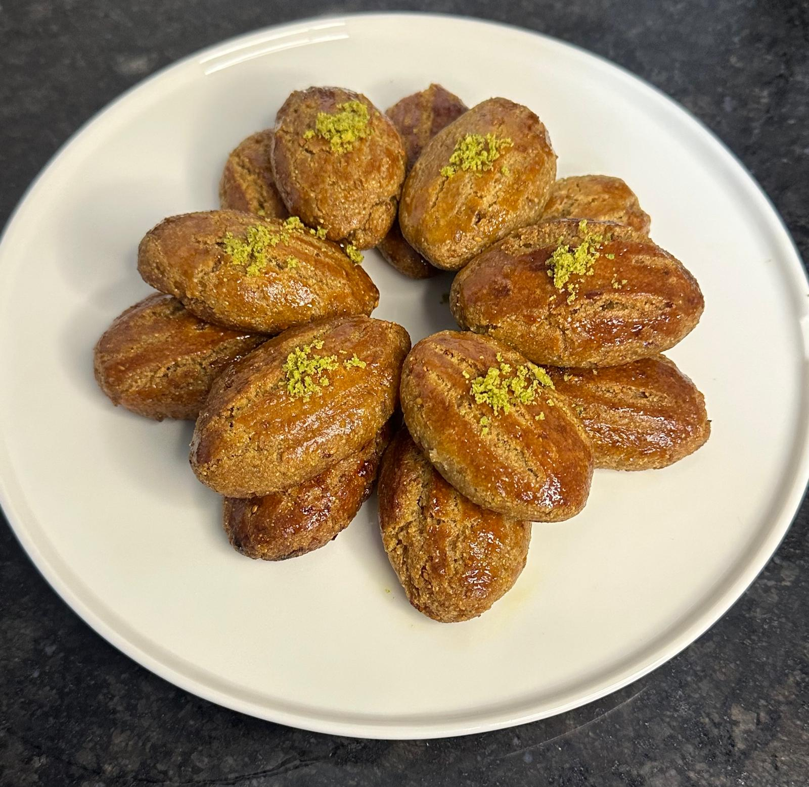

Şerbetli tatlı sevenler için; rafine şekersiz, yumuşacık şekerpare.
Tereyağı kaba alınır. Yumurta ve yoğurt eklenir. Kuru dut rondodan geçirilerek un haline getirilir ve karışıma ilave edilir. Kabartma tozu ve irmik eklenir, yoğrulur.
Un kontrollü eklenir. Yumuşak ve ele yapışmayan bir hamur hazırlanır.
Su ve bal tencereye alınır, karıştırılır ve kaynatılır. Kaynayınca birkaç damla limon suyu eklenir ve ocaktan alınarak soğumaya bırakılır.
Hamura şekil verilir ve tepsiye dizilir. Üzerine yumurta sürülür. 180°C’de pişirilir. Fırından çıkan tatlının üzerine soğuyan şerbet dökülür.